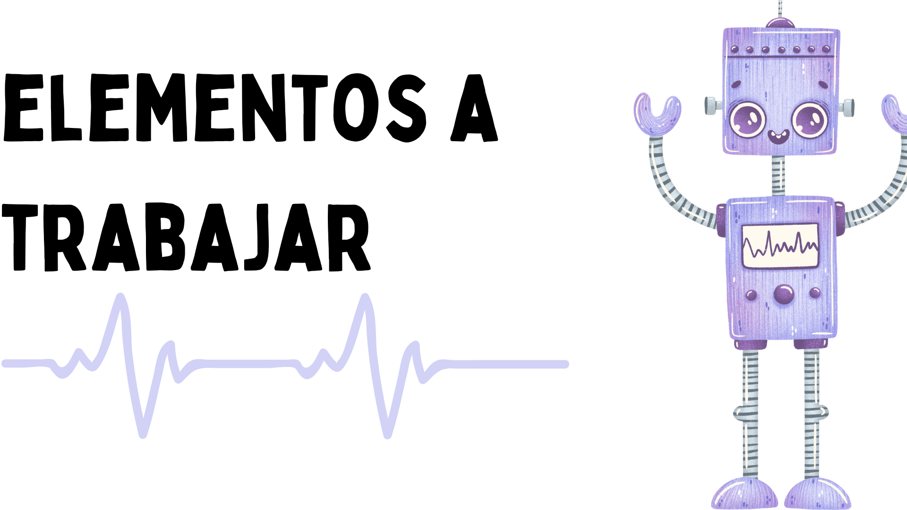
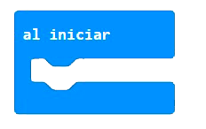

Utiliza la micro:bit para indicar las direcciones

Esta misión es muy útil para visibilizar el apoyo a la inclusión social de las personas con discapacidad. Una actividad que puedes realizar el 3 de diciembre que se celebra en todo el mundo el Día Internacional de las Personas con Discapacidad.
Vas a programar la placa, para realizar un juego por parejas, indicando la dirección en la que tiene que desplazarse según las instrucciones de nuestra micro:bit. Utiliza los bloques de entrada de inclinación para que ofrezca una señal visual en la matriz de led y un sonido distinto según la orientación de la placa. De esta manera, ofrecemos instrucciones al compañero que se desplazará con los ojos tapados. Realízalo después con los oídos tapados ayudándote del apoyo visual.

- Entorno de programación por bloques MakeCode https://makecode.microbit.org/
- Matriz de led y zumbador.
- Entradas: giroscopio
- Orientación en el espacio.
- Trabajo cooperativo.
|
 |
 |

Enlace al código del proyecto https://makecode.microbit.org/_YrpWgec4EMiF